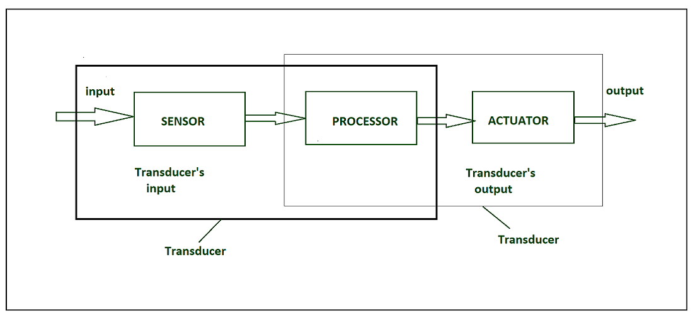

What are Sensors?
Sensors are the devices that can detect and response to changes in the environment. These changes can be in form of light, temperature, motion, moisture or any other physical property. The sensor converts these physical changes into signal that can be measured. Sensors play an important role in IoT which will make an ecosystem for collecting, analyzing, and processing data about a specific environment so that it can be monitored, managed, and controlled more easily and efficiently. Sensors bridge the gap between the physical world and the logical world.
Transducer: It converts the signal from one physical form to another physical form. it is also called energy converter. For example, microphone converts sound to electrical signal. It is based on the principle of conservation of energy.
Transmitter: A transmitter is a device that receives a signal from a sensor and converts or conditions it into a standardized electrical signal (e.g., 4-20 mA, 0-10 V, or digital) that can be transmitted over long distances to a PLC, DCS, or SCADA system.
Functions of a Transmitter:
- Amplifies weak signals from the sensor.
- Converts signals to a standard format.
- Provides isolation between sensor and control system.
- Enables long-distance signal transmission without loss.
Simple Understanding:
- Sensor → Detects.
- Transducer → Converts.
- Transmitter → Sends.
| Aspect | Sensor | Transducer | Transmitter |
|---|---|---|---|
| Definition | A device that detects or measures a physical quantity | A device that converts one form of energy into another | A device that sends the measured signal to a control or display system |
| Main Function | Sensing or detecting a physical parameter | Energy or signal conversion | Signal transmission |
| Input | Physical quantity (temperature, pressure, light, etc.) | Physical or electrical signal | Electrical signal from sensor/transducer |
| Output | Usually a raw signal (often non-standard) | Electrical signal (voltage, current, resistance, etc.) | Standardized signal (e.g., 4-20 mA, 0-10 V) |
| Signal Type | May be mechanical, electrical, or optical | Electrical output | Electrical output suitable for long-distance transmission |
| Accuracy & Processing | Low processing | Converts signal only | Conditions, amplifies, and standardizes signal |
| Examples | Thermistor, RTD, LDR | Thermocouple, Strain gauge | Pressure transmitter, Temperature transmitter |
| Role in Measurement System | First element | Middle element | Final element before control/display |
| Power Requirement | Usually passive | Active or passive | Requires external power |
Classification of Sensors
Sensors can be classified based on measured parameter, output type, or working principle.
- Based on Measured Parameter:
- Temperature Sensors: RTD, Thermocouple.
- Pressure Sensors: Strain gauge, Piezoelectric.
- Level Sensors: Float, Ultrasonic, Capacitive.
- Flow Sensors: Electromagnetic, Turbine.
- Position / Proximity Sensors: Inductive, Capacitive, Photoelectric.
- Speed / Rotation Sensors: Incremental or Absolute Encoders.
- Based on Output Type:
- Digital Sensors: Provide discrete ON/OFF signals.
- Analog Sensors: Provide continuous signals (voltage/current).
- Based on Working Principle:
- Mechanical Sensors: Switches, Levers, Bourdon tubes.
- Electromagnetic Sensors: Inductive, Hall effect.
- Optical Sensors: Photoelectric, Fiber optic.
- Thermal Sensors: Thermocouples, RTDs.
- Pneumatic/Hydraulic Sensors: Pressure switches, Flow transmitters.